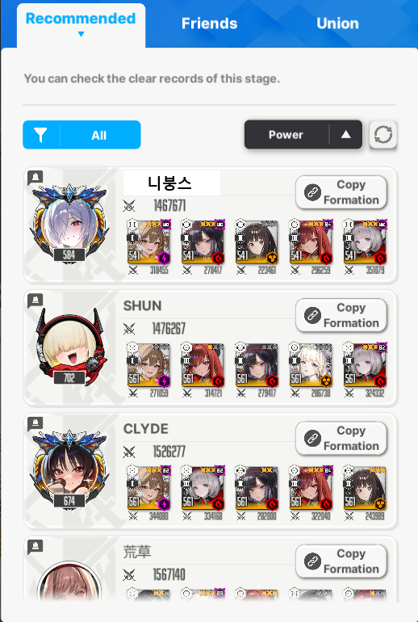
현재 글섭 하드 지즈 최저클 달성
돌니스 맥코 10/10/10 공 39.5 재장10
은화 맥코 10/10/10 우 78.8 파츠뎀큐브5
타키나 명함 8/10/1 공31 재장10
라피 C4 10/10/10 우 81.6 공 32.62 재장10
택스티 맥코 9/10/10 우 70.55 공 52.18 파츠뎀큐브5
큐브레벨 높고, 은화 4우4공이면 540전에도 깰 수 있어보임.
타키나는 1/10/1로해도 되고, 공증 안붙여도 됨. 택스티에게 가는 레이저 대신 맞으려고 스킬레벨 올렸던거임. 근데 대신 맞는거 없이 깼음.
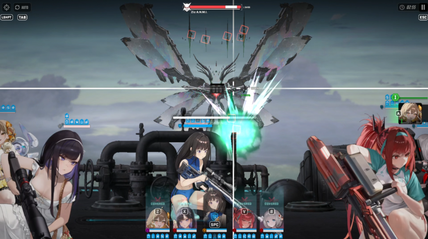
2:55 첫가시는 전체든 개별이든 엄폐로 회피해야함.
특히 각피나 베스티 엄폐물까이면 리트
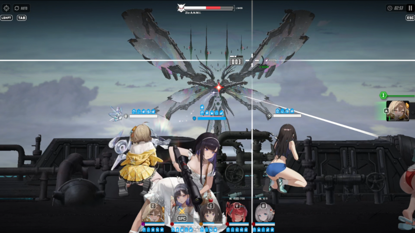
2:53 첫버스트 시작. 돌니스 -> 은화 -> 라피
2:53에 하는 이유는...
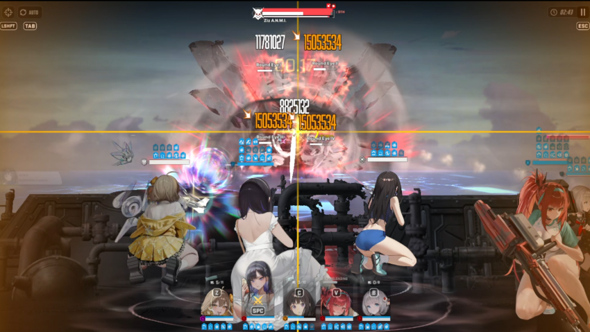
2:53에 버스트를 시작해야 2:44쯤에 뜨는 구체를 은화버스트로 풀버끝나기전에 맞출 수 있음.
레이저 포착대상은 최종공이 가장 높은 대상을 노리는데, 2:53보다 느리면 라피가 레이저 표적이 됨. 그럼 리트.
바로 타키나와 은화 톡톡이로 버충 맞춰주고
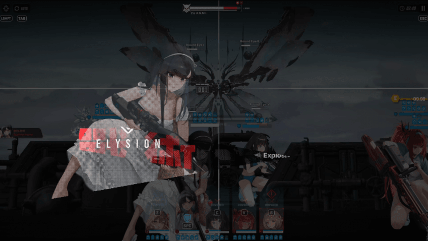
2번째 버스트, 택스티가 최종공이 가장 높아서 택스티가 표적이 된 상황. 은화에게 공증이 있었다면 은화가 표적됐을거임.
하여튼 아까말한대로 라피가 대상되면 바로 리트.
그리고 전체 엄폐. 왜냐면 은화로 버스트를 풀버때 조준사격해야하고, 베스티가 죽지 않아야함.
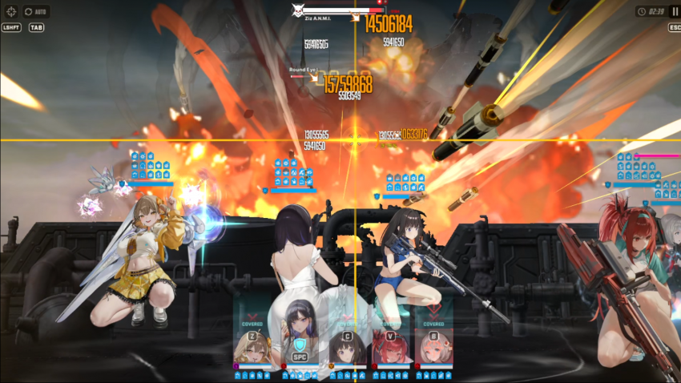
은화가 풀버때 버스트 썼고 눈알 3개가 파괴된 모습. 유념해야할것은 눈알 없을때 은화 잡고 무조건 풀버때 버스트 쓴다.
크리 리트인데, 눈알 3개이상 남으면 리트.
은화 공증 있었으면 웬만하면 깨졌을거임.
눈알 남은건 풀차지, 위처럼 실피남은건 은화 톡톡이로 깨주자.
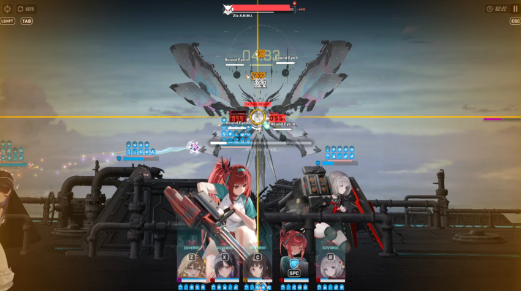
3번째 버스트 초록색 볼을 날리는데, 엄폐로 피해주자. 라피 엄폐물 까이면 리트
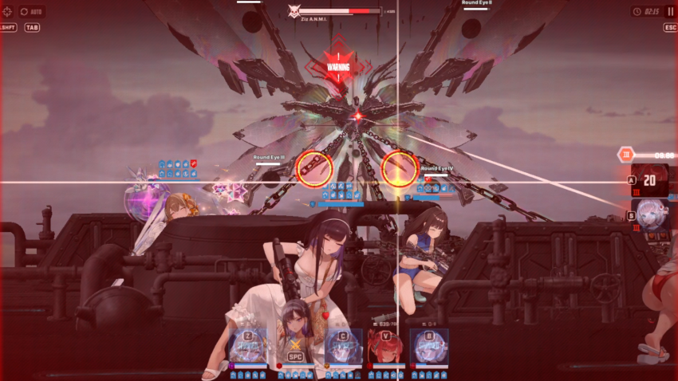
사슬패턴.
은화 버스트로 서클 하나 저지하고, 나머지하나는 풀차지로 깨줬음.
위에 은화 버스트 두방으로 눈알 4개 전부깬 경우, 4번째버스트를 위한 버충하기전에 사슬 묶임.
이때 패턴넘어가려면 은화 재장전해주고 3번째 풀버끝나기 직전에 풀차지샷을 써주면 됨. 그러면 은화 공격은 5초동안 방무효과인데, 저 두원을 풀차지 두방으로 깰 수 있음.
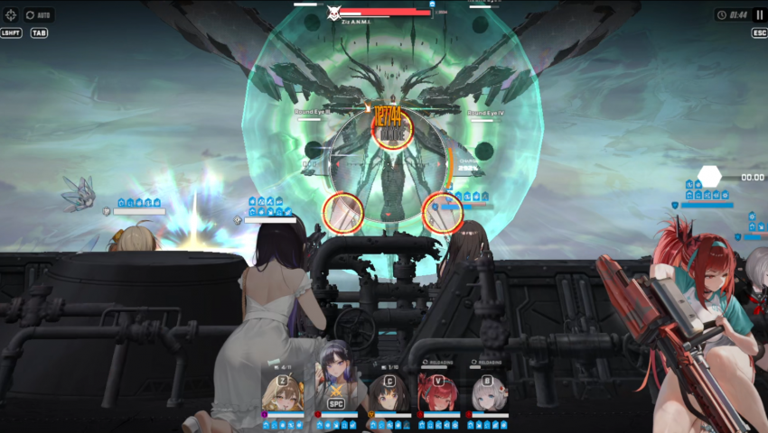
속성패턴
6번째 버스트 빠르게 굴리고 빠르게 깨주자.
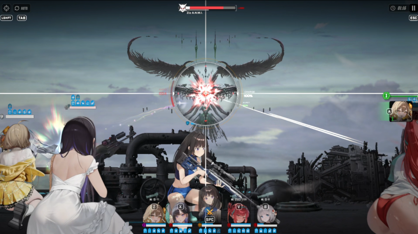
7번째버스트 도중에 2페로 들어가고, 저지패턴 뚫고 나온게 1:24초.
8번째 버스트를 살짝 뒤, 1:16초에 사용했음. 일부러 딜레이한건데 9번째버스트를 딜레이해도 됨....
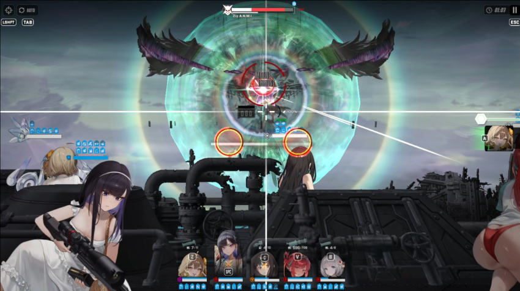
속성저지패턴과 함께 9번째버스트 1:03에 칼같이 돌리고 속성패턴을 빠르게 깨주는데, 은화버스트는 풀차지한채로 킵함.
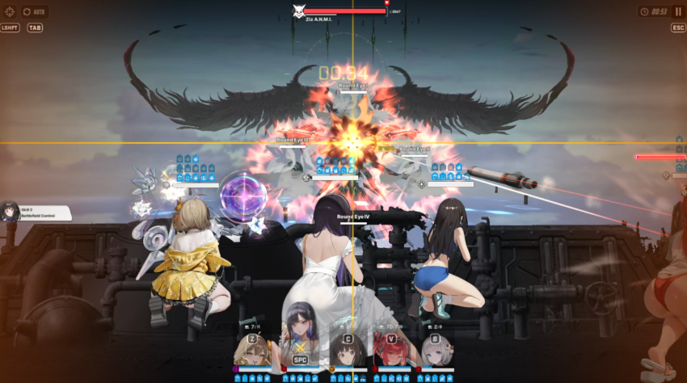
0:53 그래야 풀버끝나기 직전에 눈알이 생성되고 맞출 수 있음. 그리고
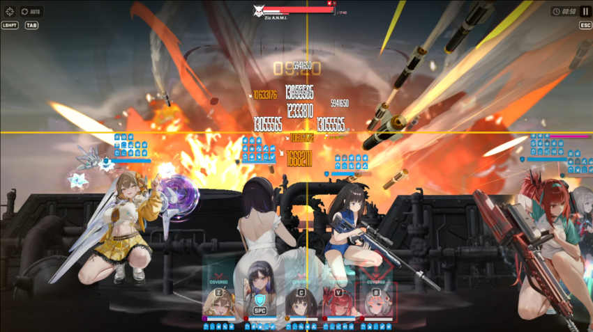
0:50 타키나 방무버프 끝나기전에 10번째버스트로 은화버스트를 다시 맞춰서 눈알을 부술 수 있음.
베스티가 첫번째 레이저를 맞아줬고, 다시 지정된 상황.
눈알 2개가 부숴졌음. 바로 은화잡고 톡톡이로 나머지 2개 눈알을 부숨.
여기서 다행히 눈알 2개가 실피만남아서 됐던거지, 아니었으면 각각 풀차지로 깨줘야함. 이때 라피 엄폐물이 이전에 조금이라도 까였으면 개별 레이저 2방을 못맞아주기때문에, 이전에 라피 엄폐물 까이면 리트하라고 했던거임.
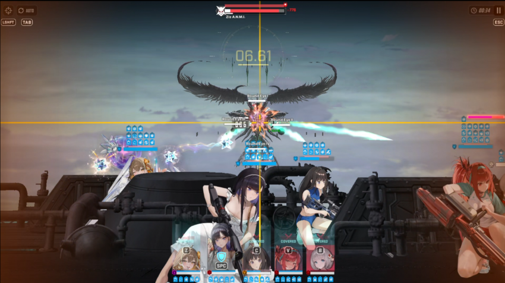
0:34 투사체는 전체엄폐로 피하자.
그리고 이 직후에 좌,우,위에 4개씩 투사체 생성한 패턴을 함.
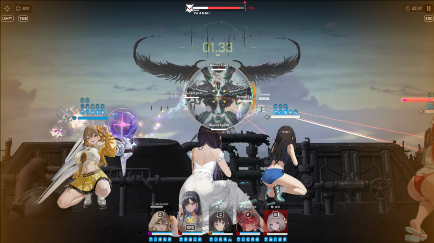
0:29 투사체 패턴 직후에 사슬을 걸러 오기때문에 은화 장탄장전해주고 풀버끝나기전에 풀차지샷을 날려주자.
그러면 사슬은 은화 풀차지 두번으로 깰수있음
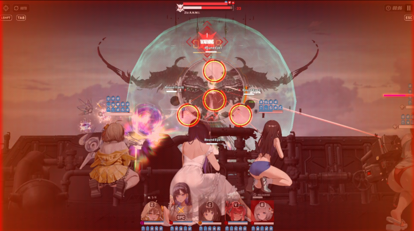
다음은 별거 없음. 그냥 줘 패면 됨.
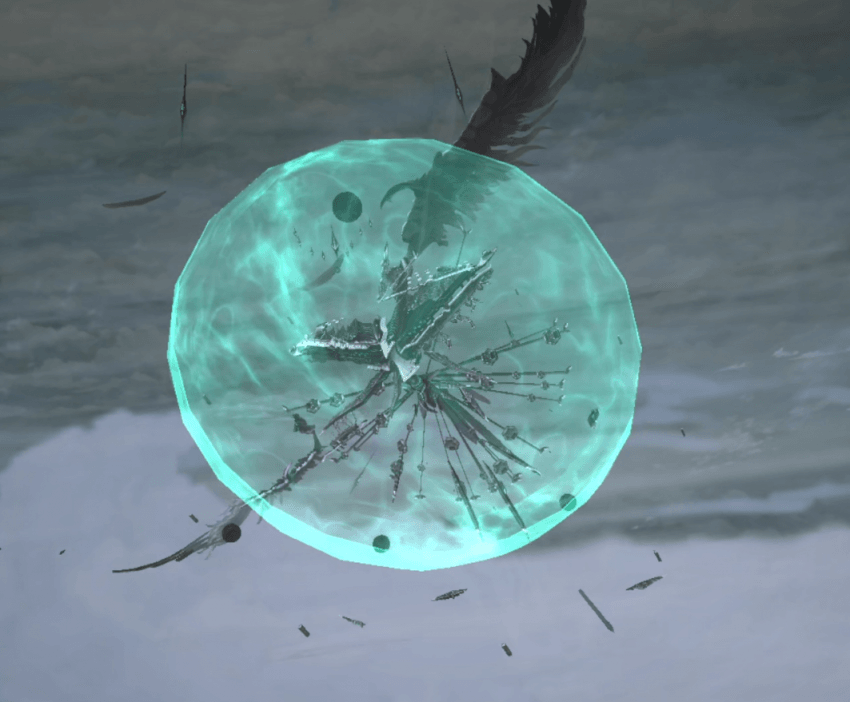
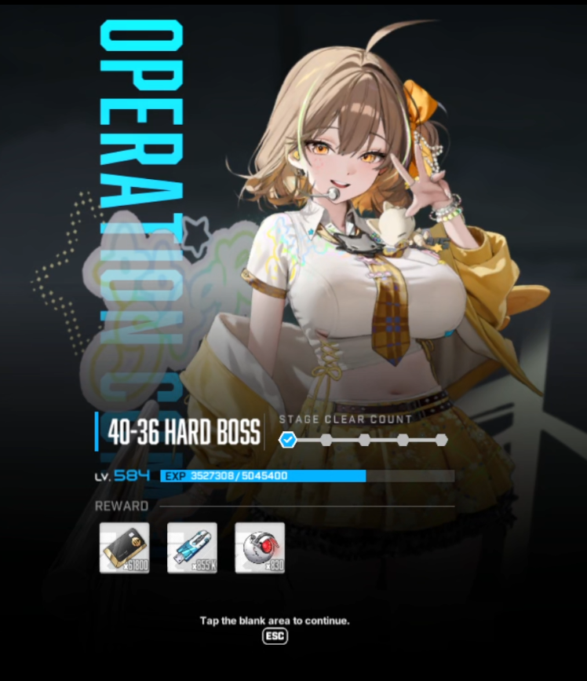
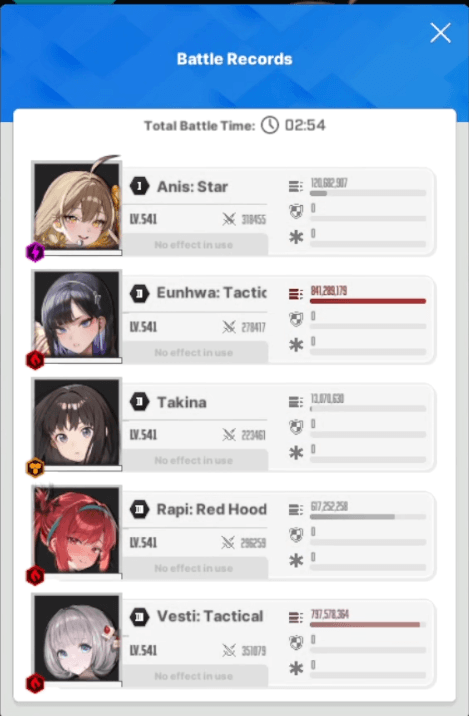
2페이즈에서 16초에 쓰지 않고 버스트 빠르게 굴리는 경우.
라피 엄폐물 한번이라도 까이지 않아야 2페이즈 눈알패턴을 파훼할 수 있음.